Efterskolen Ådalen er en kreativ efterskole med et fantastisk nærvær mellem engagerede lærere og cirka 110 elever. Vælg mellem linjefagene billedkunst, drama, eSport, musik og sport. Du udvikler dig fagligt, kreativt og personligt og får venner for livet. Efterskolen Ådalen ligger naturskønt, tæt på Aarhus i Midtjylland. Læs mere
Linjefag på Ådalen
Nyt fra bloggen
Citater fra gamle elever
Lasse Sørensen
Andre ser ikke nødvendigvis verden, som jeg gør, og vi behøver
ikke være enige om det. Det har jeg blandt andet lært ved at
snakke med så mange forskellige mennesker og også i Studie10,
hvor vi har haft psykologi og filosofi.
I løbet af efterskoleåret har jeg udviklet mig socialt, jeg er
blevet meget mere imødekommende over for fremmede – det er man
simpelthen tvunget til på efterskolen
"I begyndelsen var jeg bange for, hvad andre tænkte, men jeg har lært, at jeg er god nok."
Lasse Sørensen, 9. klasse, årgang 21/22
Mia Iversen
Jeg er kommet ud af min komfort-zone gennem Studie10, hvor vi
har holdt offentlig tale inde i Aarhus – og blevet kastet ud i
alt muligt forskelligt. Jeg er også blevet mere åben. Jeg kommer
fra Samsø, så jeg har haft i alt 10 venner i mit liv, men her på
efterskolen har jeg vænnet mig til at være social hele tiden.
Jeg har også altid haft en indre dramatiker, der ikke er
sprunget ud før her på efterskolen – men nu farver jeg hår og
går i sjovt tøj. Jeg tør være mig selv.
"Efterskolen har også lært mig, at man aldrig skal dømme nogen, for du kender dem ikke."
Mia Iversen, studie10, årgang 20/21
Mia Iversen
Jeg er kommet ud af min komfort-zone gennem Studie10, hvor vi
har holdt offentlig tale inde i Aarhus – og blevet kastet ud i
alt muligt forskelligt. Jeg er også blevet mere åben. Jeg kommer
fra Samsø, så jeg har haft i alt 10 venner i mit liv, men her på
efterskolen har jeg vænnet mig til at være social hele tiden.
Jeg har også altid haft en indre dramatiker, der ikke er
sprunget ud før her på efterskolen – men nu farver jeg hår og
går i sjovt tøj. Jeg tør være mig selv.
"Efterskolen har også lært mig, at man aldrig skal dømme nogen, for du kender dem ikke."
Mia Iversen, studie10, årgang 20/21
Tilmelding
Vi har fået en ledig plads i dette skoleår. Kontakt os, hvis du er interesseret. Ring 87 68 22 00 i kontorets åbningstid eller skriv til os på aadalen@efterskolen-aadalen.dk. Vi glæder os til at møde dig.
Tilmeld dig besøgsdagFølg med på Instagram
@EfterskolenAAdalen 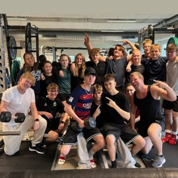
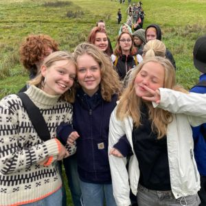
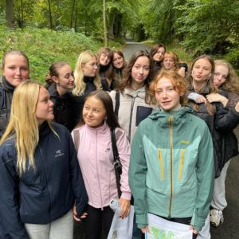
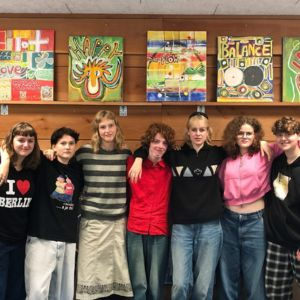
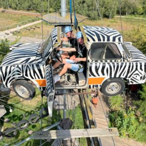
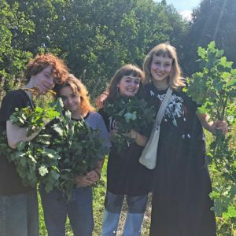
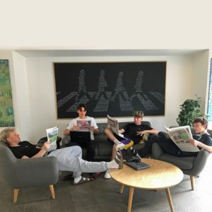
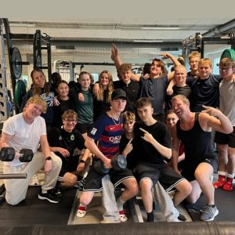
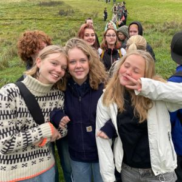
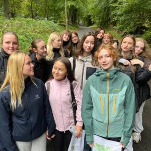
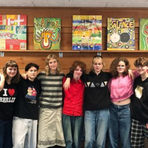
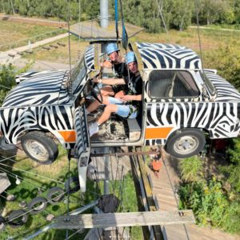
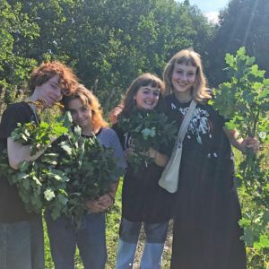
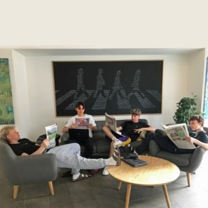